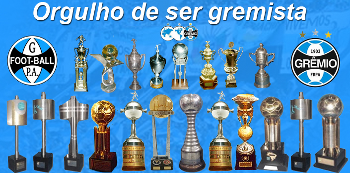

Conquistas
Títulos Nacionais
- Campeão Brasileiro em 1981 e 1996;
- Supercampeão do Brasil em 1990;
- Campeão da Copa do Brasil em 1989, 1994, 1997, 2001 e 2016;
- Campeão Brasileiro da série B em 2005;
- Campeão da Copa Sul-Brasileira em 1999;
Imagem Representativa de todos os Troféus conquistados pelo Grêmio

*Essa imagem é totalmente ilustrativa*
Troféus do Grêmio Foot-Ball Porto Alegrense
Títulos Internacionais
Copa do Mundo de Clubes da FIFA
Vencedor: 1983
Copa Libertadores da América
Vencedor: 1983, 1995, 2017
Recopa Sudamericana
Vencedor: 1996, 2018
Copa Sudamericana
Vencedor: 1995
Copa Intercontinental
Vencedor: 1983
Supercopa Libertadores
Vencedor: 1995
Copa Suruga Bank
Vencedor: 2014
Títulos Nacionais
Campeonato Brasileiro
Vencedor: 1981, 1996, 2016
Copa do Brasil
Vencedor: 1989, 1994, 1997, 2001, 2016
Supercopa do Brasil
Vencedor: 1990
Títulos Regionais e Outras Conquistas
Copa Rio Grande do Sul (Campeonato Gaúcho)
Vencedor: várias edições, mais de 40 títulos
Troféu Joan Gamper
Vencedor: 1986
Copa Cidade de Porto Alegre
Vencedor: 2001
Copa Master da Supercopa
Vencedor: 1995
Feito por Gabriel Aresi.